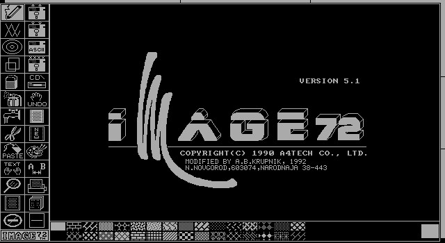

Self Education At A Glance

Listen · 7:05
MP3We can't limit ourselves,
we can't let people with good intentions pave roads for us.
There truly is a unique constellation of stars within us,
and we have to chart that space.
Moreover, a great deal of our strength, personality, and uniqueness,
comes from the sequence with which we visit those stars.
I remember when my radio career begun, I opened up an audio file editor somewhere in 1996...
I made a voice recording, and then switched some things around to make it funny in a clumsy way, and that was it for a number of years.
I had to quickly hurry, to learn how to use image72,
which is like a DOS version of MS Paint, that came out in 1990.

I was learning about everything,
and English, and DOS, and BBS, Visual Basic.
I first found a DOS version of Visual Basic with text based graphics,
and then for Windows 95 with pretty 3D button borders and input boxes.
I learned HTML from making GeoCities web pages with FrontPage,
and then looking a the code, HTML is pretty easy.
With learning HTML came a need for Photoshop,
and I became a graphic designer.
Then I got my first job,
I knew everything, and I learned it all by myself.
One of the owners took me to a bar,
to celebrate my 21 birthday.
I appreciated the experience,
it was all super interesting and super weird.
Alas, it all came to crashing end in minutes,
when the owner asked me what alcohol I wanted.
And I said that I don't drink (as it is not healthy),
and he yelled "Then why are we here?", I just thought the craziness of the situation was neat.
I focused on Visual Basic some more,
and jumped right into ASP, which was Visual Basic but not for Desktop Applications, but the Web Server.
I really enjoyed it,
but on my next job, I was told "We are a UNIX shop" so I learned Perl, in hours, Regular Expressions included.
There was a script on the server at work called FormMail,
so I grabbed the FormMail.pl file and learned Perl by subtle analogy to ASP.
I understood Perl by contrasting it with ASP,
and it was really easy.
I was already running Linux at home,
as in I was always losing data, and everything never worked.
But I knew that Perl was the next step,
then time came for PHP.
Both are still very nice languages,
but then I had to learn Bash Scripting, Action Script, the tiny language of SQL, Java and a bunch more.
I rejected Groovy, Ruby and Python,
because they weren't fixing any problems I had.
I wanted to focus on a singe language...
and eventually node.js came around and that meant JavaScript could work in the browser, and on the server, and with Node WebKit and Electron on the desktop.
Just as soon as I got good at Server, Desktop, and Web,
I kind of returned to my audio editing career, first with Music Composition, and then these little poems.
Today, was actually kind of a milestone for me,
yesterday's poem had a lot of Plosives, that is when you pronounce the letter P and release a breath of air at the microphone, that makes that base sound.
Some people call them P-Pops,
and I just wanted to warn everybody that this is probably not a good name.
So I bought a $7 pop filter, the one I've been using is only half the diameter,
this one is the size of my face, and as I am reading this line, I feel like a pro.
And yes I am still doing graphic design,
I did switch to GIMP, but I had a really hard time leaving Photoshop behind.
Mastering closed source software,
is a super bad idea, don't do it.
I just never allowed anybody to interrupt my self education,
I dropped out of College just as soon as I made the Dean's list with a perfect 4.0, because it was messing with my real education.
College was like listening to an audio book spliced out of multiple amateur book projects,
actually it was very similar to my collection of poetry.
When learning on my own I have never felt any kind of discomfort,
if I didn't like something I just didn't bother with it.
In college, I liked Philosophy, Sculpture and Art,
and when I ran out of classes - I made my own Class.
It was just me,
and my Mona Lisa art.
I would just take over the Art Studio in the evening,
and work on multiple Mona Lisa paintings all at once enjoying the lonesome late evenings.
So as long as you go after the things, that are interesting to you,
there are no limits as far as self education goes, it is always wonderful experience...